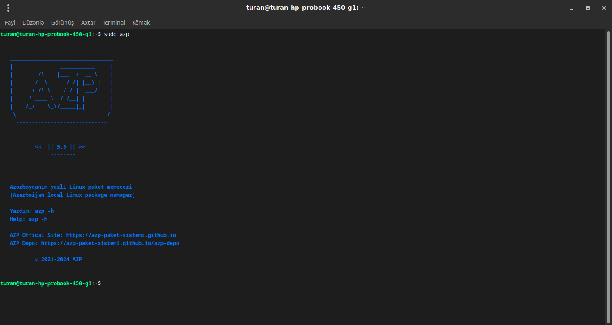
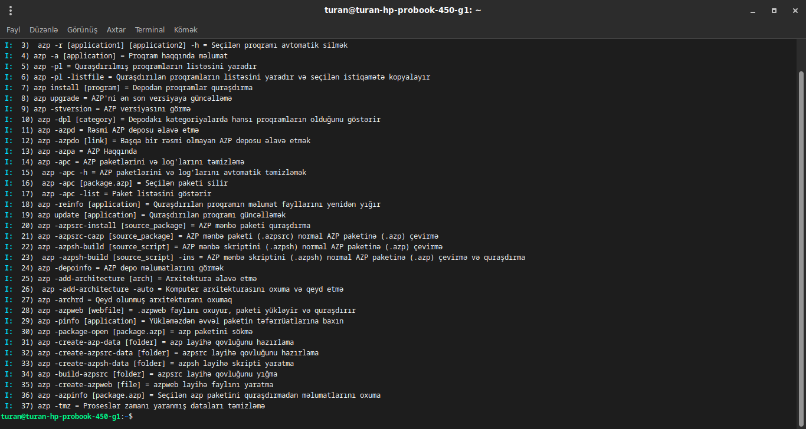

AZP




AZP, PacPERRO tərəfindən inkişaf etdirilən və bütün Linux distrolarına çalışabilən bir paket sistemidir. Paket sistemi Bash Script ilə yazılmışdır. Açıq qaynaqlı və güvənlidir. AZP paket sistemi əsasən Debian və Ubuntu bazalı distrolar üçün yazılmış bir paket sistemi olsada, bütün Linux distrolarında çalışa bilər.
Öz azp paketinizi yaratmaq üçün AZP Paket Hazırlama səhifəsindən yardım ala bilərsiniz
Əl ilə quraşdıra biləcəyiniz zip paketini yükləyin
(Zip paketini yükləmisinizsə paketi çıxarın, içinə girib oradakı 'azp-install.sh' faylını çalıştırın)
© 2021-2022 AZP